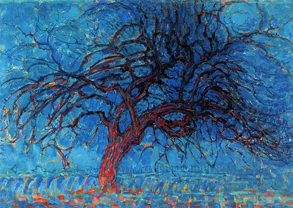

Piet Mondrian,1872 – 1944,Neoplasticism,Dutch,"Pieter Cornelis Mondriaan, after 1906 Piet Mondrian (; Dutch: [ˈpit ˈmɔndrijaːn], later [ˈmɔndrijɑn]; 7 March 1872 – 1 February 1944), was a Dutch painter and theoretician who is regarded as one of the greatest artists of the 20th century. He is known for being one of the pioneers of 20th century abstract art, as he changed his artistic direction from figurative painting to an increasingly abstract style, until he reached a point where his artistic vocabulary was reduced to simple geometric elements.Mondrian's art was highly utopian and was concerned with a search for universal values and aesthetics. He proclaimed in 1914: Art is higher than reality and has no direct relation to reality. To approach the spiritual in art, one will make as little use as possible of reality, because reality is opposed to the spiritual. We find ourselves in the presence of an abstract art. Art should be above reality, otherwise it would have no value for man. His art, however, always remained rooted in nature. ",https://en.wikipedia.org/wiki/Piet_Mondrian,84
